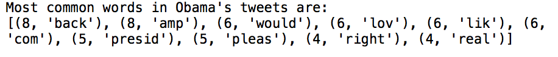
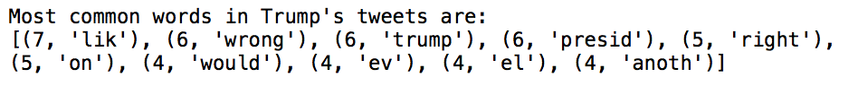
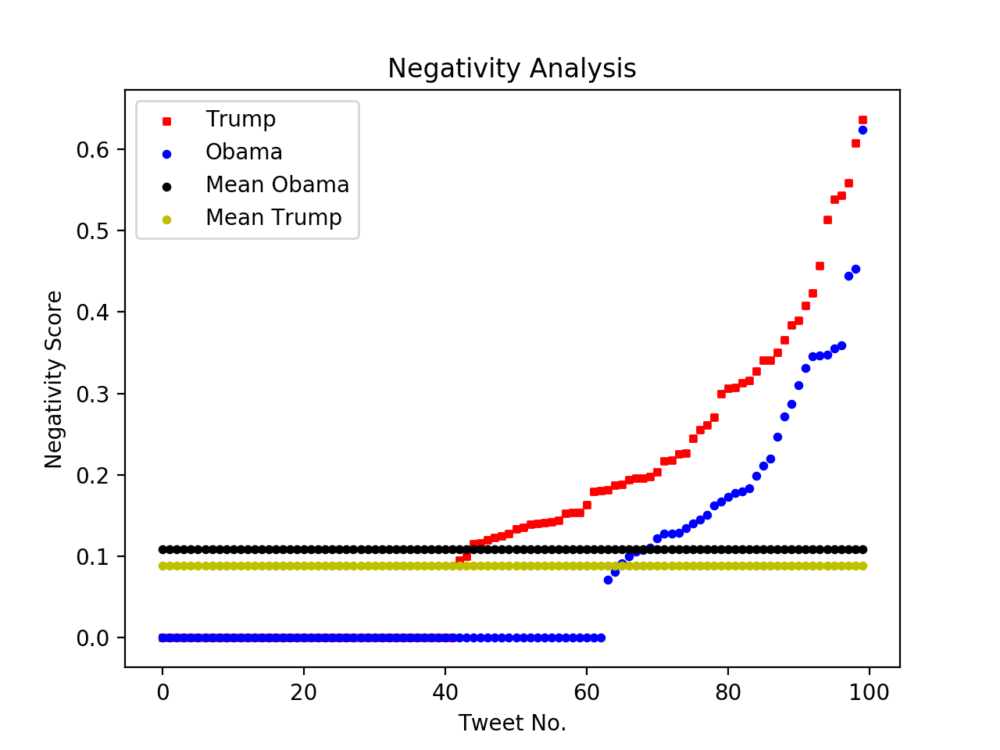

Online News Popularity: R-Programming Analysis
For my Quantatative Analytics course we found a Mashable data set that dealt with discerning the popularity of online news. We wanted to use this dataset to identify the key variables that contribute to news popularity and ultimately create a model that can predict the accuracy of news popularity. The focus of this project centered around identifying the most relevant variables that contribute to news popularity, figuring out the “best” models to predict online popularity, testing these models and refining them accordingly. Using R our team created three different models: A Regression Tree, A KNN Model and a Logistics Model.
Models
Classification Tree:
Based on our Classification Tree, it is hard to pinpoint the exact combination of variables to ensure a popular article. However, we identified that some of variables that kept reappearing were telling us that popular articles were less likely to be a world and/or entertainment article and would be even less likely if published on a weekend. When we built our code, we converted several variables such as “weekday_is_friday” or “data_channel_is_lifestyle” to factors since they provide binary answers.Results
When I returned the 10 most common words in the tweets I got the following results:


In both Obama and Trump tweets they share the common words “presid”, “like” and “right.” The word “president” or “presidency” makes sense in this context, but it is interesting that the word “right” and “like” is used. It is unclear if the word “like” is used for a simile comparison or in terms of favoring or “liking” a particular candidate. However, we can tell from the average positivity and negativity analysis that Obama is the more favored president where he received more positivity in his tweets and less negativity in his tweets than Trump’s.

The code I created was able to computes the the average positivity and negativity tweets and also illustrates the tweet number with its positivity/negativity score.


Interestingly, Trump received 2x more negativity in his tweets than Obamas, and Obama received nearly 2x more positivity in his tweets than Trump. Yet it is unclear if there is correlation with the people who are tweeting positive things about Obama are also tweeting negative things about. Another interesting observation about the Positivity Analysis graph is how the curve of both Obama and Trump appear to be the same shape in the beginning but towards the end Obama tweets start to see a much higher positivity score than Trump. For the straight line on both graphs, these were tweets that received a negativity and positivity score of 0, which meant that they were neutral – there were no words included in the text that revealed whether the user favored or disliked another candidate.
Reflection: From a learning point of view, there was a steep learning curve since we were given no templates on how to format a text mining project. I learned that you had to have a web scraping python page separate from the data cleaning (tokenization) and analysis page. I feel like I developed a much better understanding of how dictionaries work in Python as a result of this project and how to protect my consumer key and access token. If I were to do this project again or had more time, I would have liked to included a part that analyzed whether the positive or negative tweets correlated to specific political parties using Indico’s API.